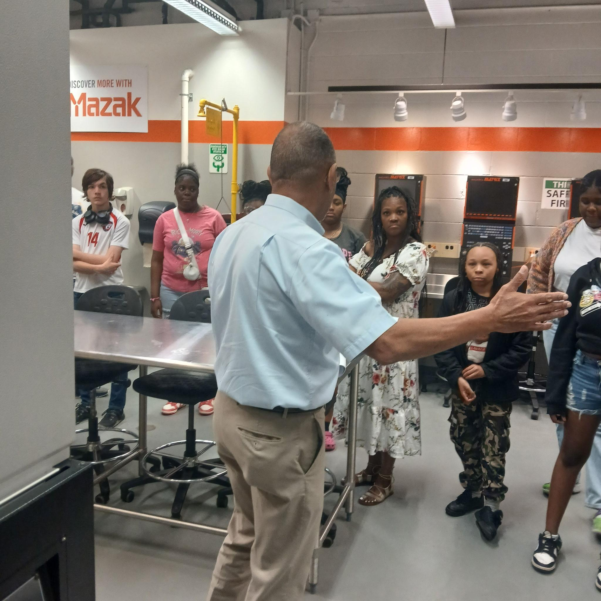

Community Builders 📍 Region 1
Petersburg's Community Builders program at Vernon Johns Middle School created the Family Engagement University (FEU) to remove the barriers that keep families from participating in school events. Each session provides childcare, food, and transportation so that families can attend as learners themselves, gaining knowledge and tools to support their children while connecting with each other and community resources. Branded as "A Different World," a name that carries cultural weight in an HBCU-adjacent city, FEU is the division's primary vehicle for connecting families to the school community, organized around Superintendent Brown's 4 E's framework: Enrolled, Enlisted, Employed, and Entrepreneur. The annual 4 E's Expo drew nearly 400 attendees in a single evening.
The Builders Hub 8th Grade Edition extends the same 4 E's framework to students. Thirty-three Vernon Johns eighth graders participated in an after-school program and a four-day summer experience organized around career pathways. Beyond the sessions, FEU's reach extends to community events and neighborhood outreach, including hygiene kit distribution where staff meet families where they live.
Petersburg City's Community Builders program exemplifies VCSI 3.1: Align to the Four Branches of Student Support. Petersburg City created a program for their 8th graders that increased engagement, boosted motivation, and expanded learning.
The Expo brought college representatives, career programs, and community organizations together at Petersburg High School for one evening. Brightpoint Community College offered guaranteed admissions agreements at one table while Chester Career College engaged students in career conversations at the next. A parent brought a young child along to the Brightpoint booth, the child reaching for a prize wheel while the representative talked across the table. Beyond the Expo, a packed Family Engagement University session offers the opportunity for families to connect with each other and community resources.
"As a parent of a child in Petersburg Public Schools, I feel The Family Engagement University is one of the current strengths of PCPS. I feel that parent engagement is essential for the overall success of our kids and the school. It is a great opportunity to stay engaged with what is going on at PCPS and as parents how we can help the division reach their goals. My child loves to attend because of all the fun activities & door prizes. As a parent I love the opportunity it gives me to network with other parents. I believe FEU gives me the tools and knowledge to support the whole family whether it's money management, self-care, understanding SOL's, improving my child's study habits and so much more. They provide childcare, food, transportation and a lot of knowledge on various topics at each session. There are always vendors there to provide information about community events and resources available that we may not know about. I encourage all parents and guardians to attend FEU and be part of the solution to support PCPS."
— Lakesha Tinsley, 6th Grade Parent


Between FEU sessions, staff take the program out to families directly. A distribution table is set up beside a PCPS school bus marked "The Wave," and at an outdoor site in a residential area, staff hand out hygiene kits under a red tent.

The Builders Hub 8th Grade Edition was presented to the Petersburg City Public Schools Board in May 2025, documenting how the program structured four days of career exploration across the 4 E's pillars for Vernon Johns eighth graders.



The Builders Hub summer experience organized four days around the 4 E's pillars. On the Enrolled day, eighth graders gathered around Omni, a humanoid robot, at Richard Bland College for hands-on time with STEM and AI. The Enlisted day brought them onto a military installation, where they climbed inside a Humvee and explored it firsthand. On the Employed days, students practiced CPR on training mannequins under instructor supervision and walked through an EMS demonstration with a paramedic at a medical facility.
The Builders Hub 8th Grade Edition summer experience was captured on video, showing eighth graders from Vernon Johns Middle School across four days of career exploration at college campuses, military installations, and workforce training sites.